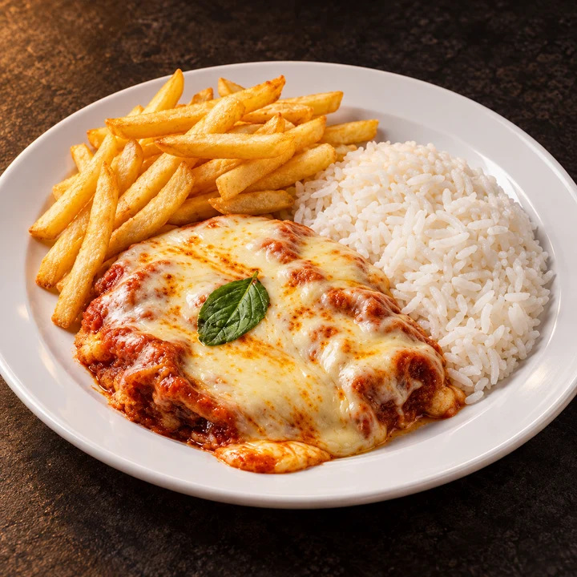
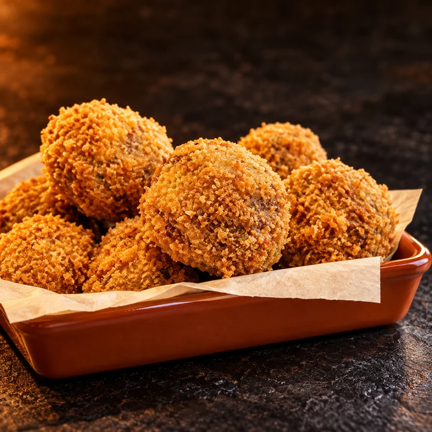
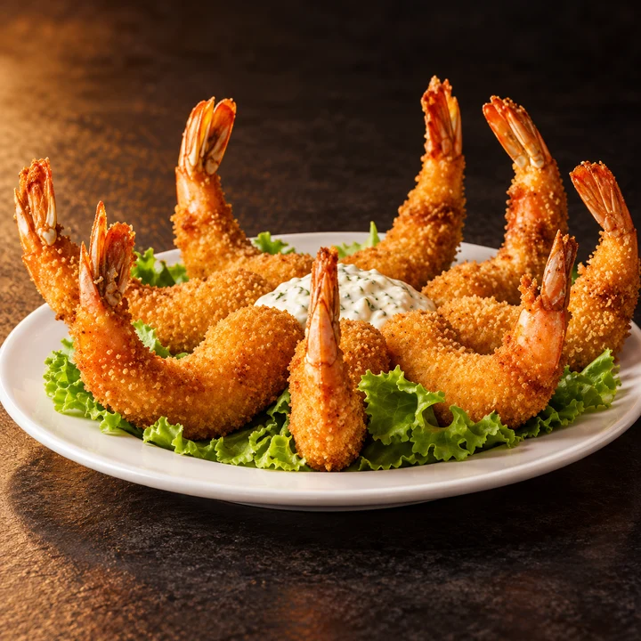
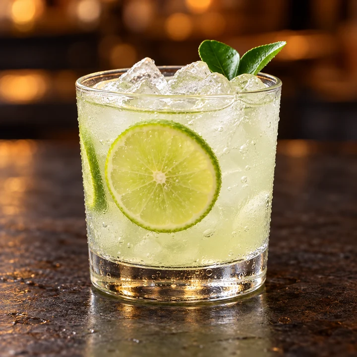
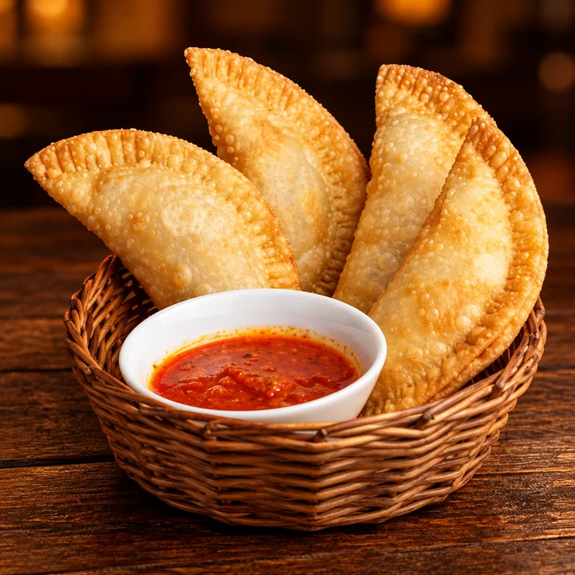

✳ UM PEDAÇO DE CUBA. NO CORAÇÃO DE VR.
A noite temoutro sabor.
Drinks no ponto. Petiscos para dividir.
Uma boa história para levar para casa.
FEITOS PARA COMPARTILHAR
Sabores que
entram na roda.
Escolha o seu. Chame a turma. Puxe uma cadeira.
01 / ESCOLHA SEU PRÓXIMO FAVORITO
Deu vontade?
Do almoço ao último brinde.
Encontre o que combina com o seu momento.

Almoço executivoUma pausa cheia de sabor.↗
PetiscosPara chamar a turma.↗
Frutos do marCrocância e bons encontros.↗
DrinksO seu próximo brinde.↗BebidasCervejas, sucos e mais.↗

Todo o cardápioEncontre seu novo favorito.↗Para começar bem.
Uma seleção para entrar no clima.
Vamos tentar outro sabor?
Nenhum item encontrado. Tente outro nome ou explore todas as categorias.
02 / O SABOR É SÓ O COMEÇO
Um brinde
ao encontro.
A mesa puxa a conversa. O drink encontra o ritmo. E aquela saída sem compromisso vira a melhor parte do dia.
Na CubanHouse, almoço, petiscos e coquetelaria dividem a cena com noites de samba e pagode no Aterrado.
Conheça a casa pelo Instagram ↗Os copos, o chope e a cara da CubanHouse.

MÚSICA, BRINDES E BOAS HISTÓRIAS
O encontro
tem ritmo.
Samba, pagode e um motivo
para ficar mais um pouco.
03 / NOS VEMOS NO ATERRADO
Pode chegar.
Av. Sete de Setembro, 190
Aterrado · Volta Redonda, RJ
Seu momento, nosso horário.
- Segunda
- Fechado
- Terça & quarta
- 11h — 0h30
- Quinta
- 11h — 1h
- Sexta & sábado
- 11h — 2h
- Domingo
- 18h — 0h
Horários do salão cadastrados no Google. Feriados e eventos podem alterar o funcionamento.
A GENTE SE ENCONTRA NO CUBAN.
ATERRADO · VOLTA REDONDA